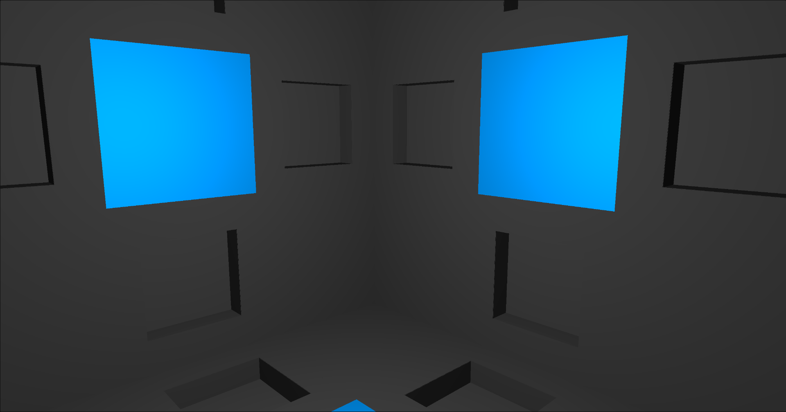

Personal Information
 Name:
Name: Primary Alias: Chameleon
Student Number: 3884930
Student Email: s3884930@student.rmit.edu.au
Nationality: Australian
Culture: Digital Citizen
Interesting Fact: Has successfully removed nearly all traces of his name from the public internet. Only an old ABN record remains.
Even this page shouldn't show up in a search result.
Interesting Skill: Rapid prototyping of extensions/tweaks to web sites/applications via the use of userscripts.
Daily Toolkit: zsh, ssh, sshfs, tmux, termite, vim, Arch Linux, Wayland/wlroots/custom compositor, Chromium, MariaDB/MySQL, Node.js, MongoDB, multiple bespoke domain specific javascript web applications
Interests: Movies, Reading, Writing, Learning, Creating/Inventing
Dis-interests: Selfies, Marketing, Disingenuity
Interest in IT
Information Technology. Such a broad category of topics which can expand to cover nearly every field and discipline. Design, manufacturing, entertainment, health; Information Technology can be included to increase the efficiencies in all of them and more.
My interest in IT is that it encompasses the systems (processes and how things work) of the world around us. And if they aren't within the domain of IT already then there is likely an application of IT that will make them better, from analysis to automation, simulation to outright replacement of the existing processes.
My introduction to IT as a thing that I actively used in a meaningful way is hard to pin down. At a young age I was exposed to a Commodore 64 and went through the generations of Micro$oft products from Windows 3.11, 95, 98, Millennium Edition (my personal favourite as it was so buggy that it was a game in and of itself), XP, and finally Vista. After Vista I moved on to Linux which I have been using since.
I did an IT course in 2008 which led to my gaining three CompTIA lifetime certifications (Linux+, A+, and Systems Support Specialist). Though the biggest thing I learned from the course was that you can be certified in a large number of things without any qualifications or proof of learning and it only costs around three hundred dollars for each certification.
My path to studying at RMIT is perhaps a non-typical one. When COVID-19 partly shut down the world I wasn't much affected as I was fairly isolated before that, but it did lead to the government removing the Mutual Obligation Requirements for JobSeeker. As I wasn't working anyway, and my remote location didn't matter if I wasn't required to look for jobs, I signed up. Fast forward a few months and Mutual Obligation Requirements started coming back in a limited manner and I started unsuccessfully applying for jobs that I have the skills for but not the qualifications or provable experience. Austudy is nearly equivalent to JobSeeker and so I started researching online universities. After filling out my contact details for some part of the Open Universities Australia site I was contacted by one of their student advisors nearly immediately. I didn't have any reason not to enrol right away and after a short conversation was signed up for two fo the Open Enrolment courses at RMIT. A few weeks later I had started the courses that would lead to getting a Bachelor of Information Technology degree.
The main thing that I expect to learn from my studies at RMIT is working with peers to achieve outcomes as that isn't something I have a lot of experience with. Though I also expect that there are some holes in my self-taught knowledge that will be filled as well as exposure to completely new ideas and technologies.
Ideal Job
Varjo Job Listing (Internet Archive snapshot)
An ideal job that I would like would be to work on Linux support for the Varjo VR/AR headsets. It would be ideal for me because it is cutting edge technology with various applications that would hold my interest.
While Varjo doesn't have a specific job advertisement for adding Linux support for their products they do have an Open Application job listing for developers. They state in the listing that they are offering a position that will give an opportunity to play with and create the computer interface of the future. I think a good case can be made that they won't meet that ambition while being restricted to a single OS (windows). What makes it such an appealing job is that Varjo has VR headsets that are good enough to be replacements for real-world screens.
The position would be in writing software (kernel modules or userspace) to interface with their existing hardware including an implementation of whatever tracking is on the computer side. Possible job requirements might be to implement AMD and NVIDIA GPU support for missing features in Linux.
The skills, qualifications, and experience required for the job are a bit vague as the job listing is open and relies on the applicant to convince them. Varjo as a company is interested in hiring people who have done impressive projects in the field. A PhD in the field of VR/AR that also involved using Linux while also being compellingly executed would be an obvious potential in. More experience in working with novel hardware interfacing with Linux would also be valuable.
My current skills and experience in the field would be that I'm well versed in and am comfortable with Linux. I've also written Oculus Rift support for the Weston Wayland compositor (back when Oculus Rift had Linux support).
My plan for gaining the skills, qualifications, and experience required for the position would be to gain entry to the Bachelor of Information Technology degree via Open Enrollment, complete that degree, then on to something like the Graduate Certificate of Design Innovation and Technology. In the years that it will take to do both of those I expect that technology in the field of VR will continue to progress opening up more opportunities. Perhaps an engineering degree and creating my own VR technology to the specifications I would most prefer is another pathway to take.
Personal Profile
MBTI: INTJ-A INTP-A (16personalities.com, 2020)
Learning Style: Reflector style (+ anti-activist style) (EMTRAIN - Learning Styles, 2020)
Enneagram: Type Five (Eclectic Energies, 2020)
The MBTI and Enneagram personality frameworks are both things that I have studied somewhat in-depth. I consistently test as an INTJ but am a mistyped INTP. MBTI is about how you process information and your behaviours while Enneagram is about motivations and fears, both of them together give a better understanding of how a person works than either alone. The learning style test's results match up with my MBTI type and it seems to be a more coarse categorisation, all it really told me is that I wouldn't benefit from brainstorming, problem setting, group discussions, and roleplaying. The only one I would agree with from that would be the roleplaying.
In-depth analysis
(The in-depth analysis pulls from a character creation app (part of a larger novel creation/writing app) that I wrote which itself pulled a lot of its explanation from Funky MBTI in Fiction (on tumblr) which has since moved to Funky MBTI (on wordpress).
The Enneagram information is pulled from `The Modern Enneagram: Discover Who You Are and Who You Can Be` by Kacie Berghoef and Melanie Bell.)
The results of the tests are a confirmation that the way that I think and approach things isn't wrong and that people who try to enforce their own preferred way that I behave upon me can be succinctly pointed to these psychological profiles.
Not having worked in many teams I'm not sure how knowing my psychological profile would affect my behaviour. Being able to see other team member's psychological profiles and then be able to look up how to most effectively interact with them would likely influence my behaviour. Being an INTP I see many possibilities as to what can be a solution to a given problem and share and think those many possibilities out.
My preference for forming a team, going by the profile of an INTP, is to not form a team. That being said apparently my personality type functions best when paired with an "implementer" as I live in my own head and vent inspiration and creativity without following through (16Personalities - INTPs at Work). I can see how that could be accurate.
Something to be aware of when using personality tests is Barnum statements (seemingly specific descriptions of your character that are actually generalisations that apply to the majority of people) both the MBTI and Enneagram tests are able to show a contrasting type. Both are also able to be broken down into sub-components that show how other types can think and are motivated both similarly and differently to yourself.
Project Idea
Overview
A 3D web application to teach how to set up and begin filling an artificial Memory Palace.
Motivation
The project would be useful in that being able to perfectly memorise and store information in the mind would be incredibly useful for the typical university course. Closed book tests that rely upon knowing the contents of the assigned textbooks would be trivial if you have them memorised. Having large amounts of profession-specific information in your mind and easily referenced would also be a boon in professional life. Taking it a step further, courses could be written/created with perfect memorisation of core understandings as a learning objective making the long term retention of the topics taught a possibility.
Description
To give a detailed description of the project first requires a look at the underlying principles for efficiently and permanently storing information in the brain. There are only five:
- Storing visual objects in the brain - The brain is very efficient at storing/remembering spatial information. To create a memory all that is required is the visualising of two objects connected to each other. Picturing a black cat on a chair creates an association between 'chair' and 'black cat', it is easy to remember one when prompted with the other - "What was on the chair?" or "What was the black cat on?"; or more simply "Chair" or "Black cat".
- Encoding information into visual objects - If storing visual objects by linking them together works then the next step is to convert the information you want to memorise into visual objects. Some things are already visual objects and so don't need encoding, but others such as digits, months, abstract concepts, etc. require picking a visual object to represent them.
- Refreshing connections - Just making a connection between two visual objects will store the association in your brain but that association will fade unless refreshed (see the Spacing effect, first studied by Hermann Ebbinghaus in his book 'Memory: A Contribution to Experimental Psychology' in 1885, should be considered Common Knowledge by now). A systematic way of storing memorised content so that it can be reviewed efficiently is required and the Method of Loci is the way chosen by this project.
- Virtual Method of Loci - The Method of Loci is typically done with a well-known location but (Legge, Madan, Ng, and Caplan, 2012) found that it can be just as effective with a lower-detailed created virtual environment. Following on from that the project will create a compact virtual environment consisting of a series of cube rooms. Each room will be made up of an anchoring visual object in the centre as well as two alcoves and a doorway to other rooms in each of the four walls, the ceiling, and the floor (for a total of six doorways and twelve alcoves per room).
- Expansion of storage system - Storing information can be done at the top level of the Virtual Method of Loci by storing the virtual objects representing information to be memorised directly in the alcoves of the rooms. This would however only allow twelve pieces of information to be stored per room which is not very efficient. Instead each alcove will be filled with a randomly chosen visual object which will then be split into five sub-objects ("Russian Doll" method from the Giordano Memorization System created in 1990 by Vladimir A. Kozarenko), twelve visual objects ("Free Association" method from the Giordano Memorization System) on each sub-object, and then each of those also split into five sub-objects. This gives three thousand six hundred "slots" to store information on in each room, allowing rooms to encompass entire topics.
All of which was necessary preamble to give context to what the project will be. A 3D application giving a representation of the Virtual Method of Loci implemented with WebGL to run in any common web browser and using First Person Shooter controls. It will have a text tutorial that will teach how to internalise the memorisation system and 3D models will be able to be selected for the alcoves, Free Association, and room anchor visual objects.
Tools and Technologies
three.js - A Javascript library/API built on top of WebGL.
Any modern web browser - For production and end-use a web browser that supports WebGL will be required.
3DModelHaven - A public domain/copyright-free (CC0 license) repository of 3D models.
Skills Required
Web Coding - A combination of HTML, CSS, and Javascript.
Graphics Coding - An understanding of how graphics programming is done in the web browser (using three.js) including loading of 3D models.
Server Administration - To keep initial costs down having someone who can set up a cheap server to host the web application.
Marketing - Being able to make a sales pitch selling the idea/implementation.
Course Creation - Being able to use the created product to create pre-filled databases of images/content to serve as examples.
The above skills are all commonly available and easy to pick up. No special software or hardware is required for the project.
Outcome
There are several different outcomes possible for the project that would be considered "successful": having a personal memory system and a way to share it with others, selling it to investors/another company, university adoption (and so a more efficient way of learning new courses), or dedicated to the common good and adopted by the masses (like Wikipedia).
The impact of the project will be different depending on what outcome ends up being aimed for. As a personal project, the impact will be minimal; as a tool adopted by universities or the masses, it could fundamentally change how things are taught.
The "outcome" of the project is something I'm less interested in; the idea and the implementation are what is interesting to me.
References
Legge, E., Madan, C., Ng, E., and Caplan, J., 2012. Building a memory palace in minutes: Equivalent memory performance using virtual versus conventional environment with the Method of Loci. Acta Psychologica, [online] 141(3), pp.380-390. Available at: https://www.academia.edu/2987335/Building_a_memory_palace_in_minutes_Equivalent_memory_performance_using_virtual_versus_conventional_environments_with_the_Method_of_Loci
Other potential ideas
Realtime model of a location using multiple security camera pairs (+ VR?)
Drive-by-wire human-powered vehicle (within the Australian legal classification of a bicycle)
Handheld chording keyboard (see http://www.alphagrip.com/) but with a different take on it (improved mouse input at a minimum)